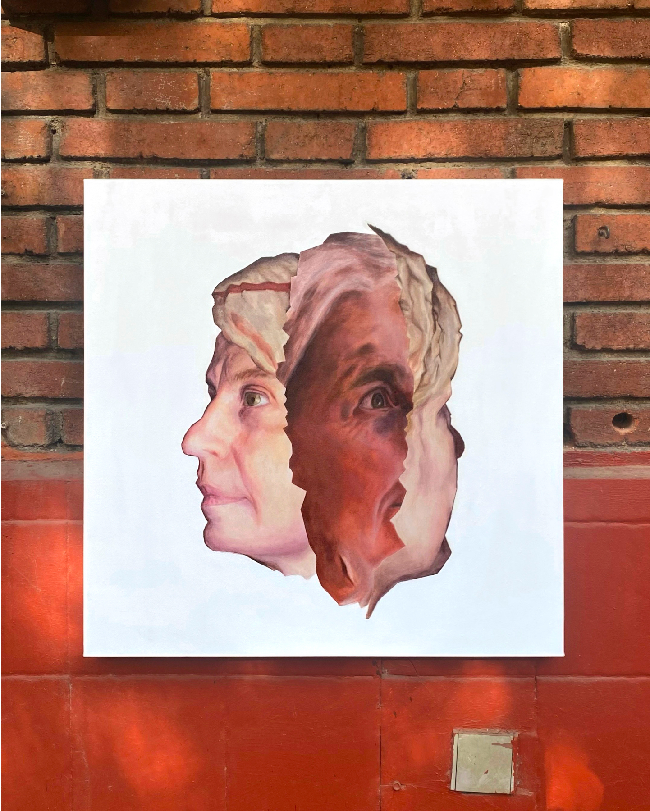
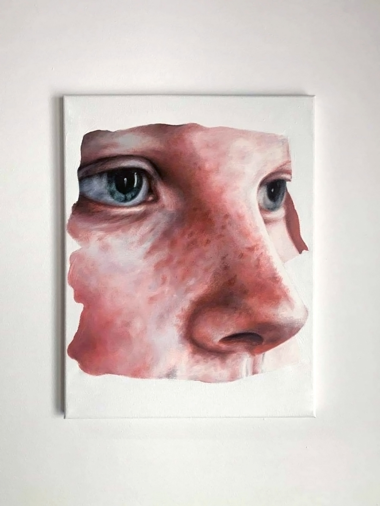
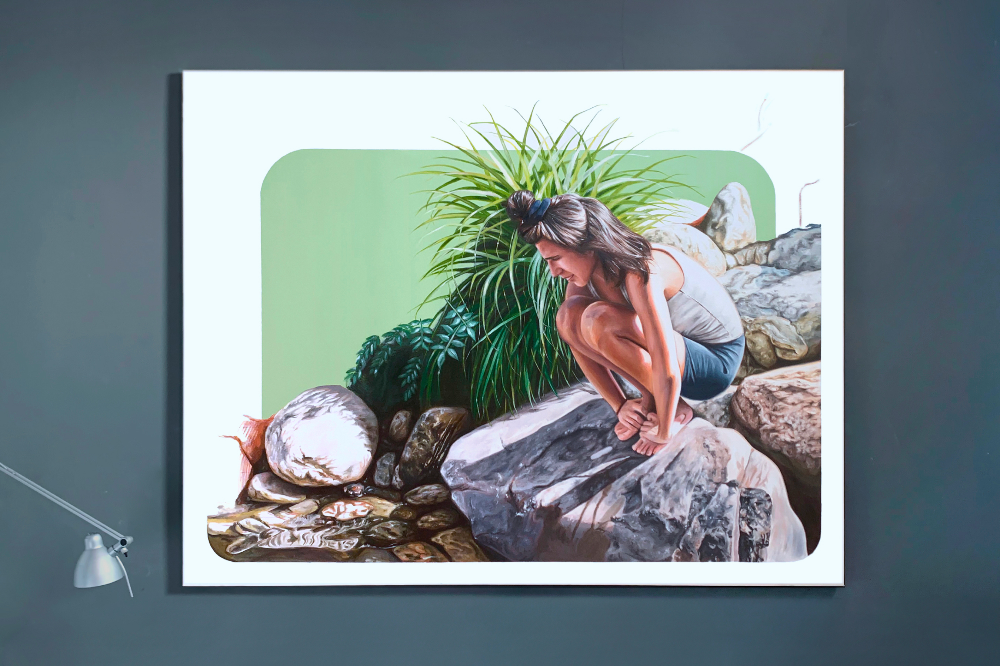
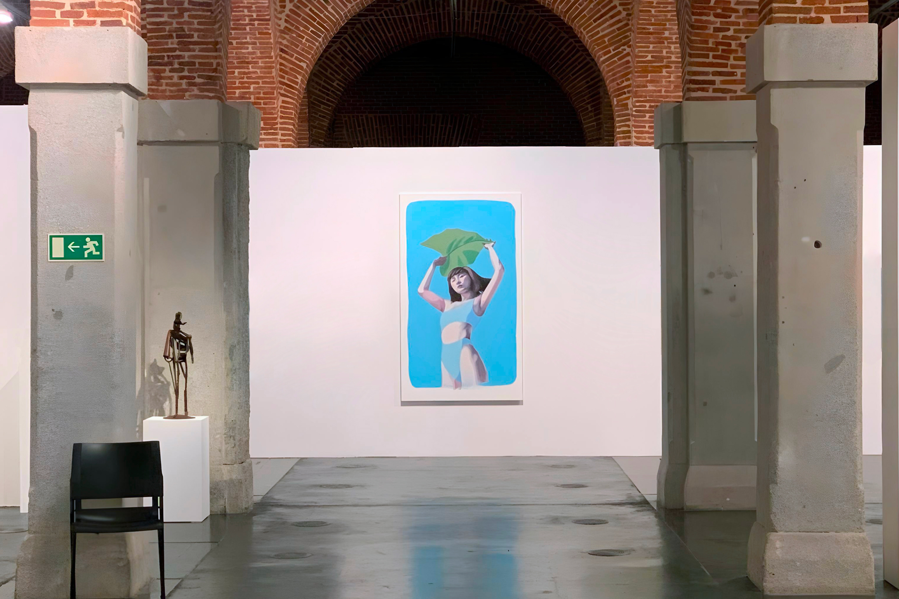
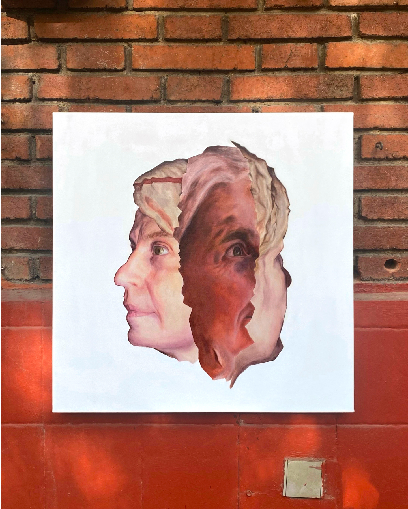
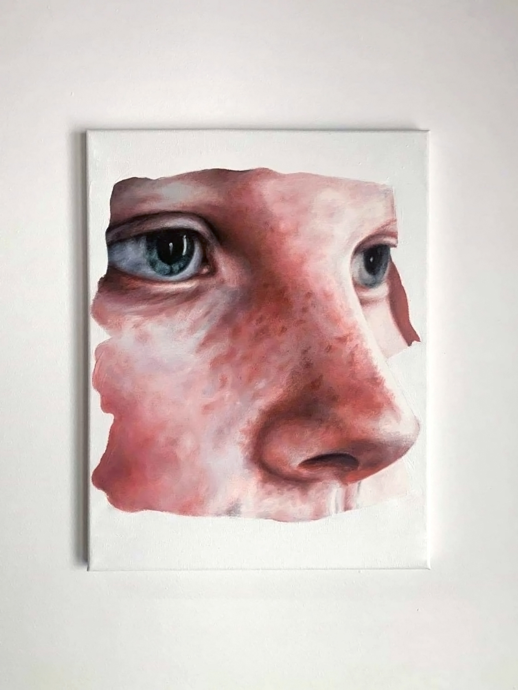
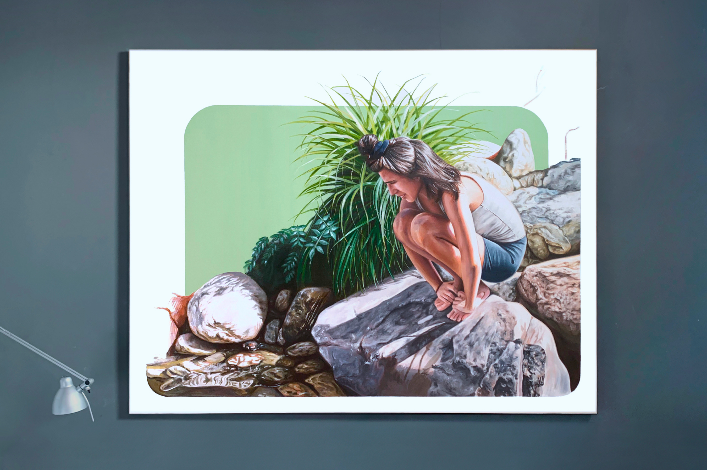
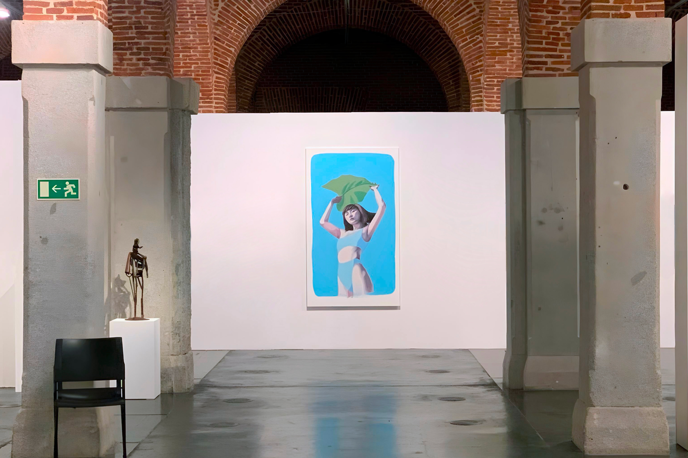

fragmentos
La percepción de la realidad se fragmenta en capas que desafían los límites de lo tangible. La tecnología impone su orden y objetividad, convierte la figura en un mapa tridimensional.
Este primer acto, un gesto tecnológico que despoja a la realidad de su espontaneidad, se convierte en el punto de partida de una transformación continua. Lo capturado no es más que una base, una representación que se somete a procesos de manipulación, fragmentación y reconstrucción.
Fragmentos_ busca reflexionar sobre lo que significa ser visto y cómo los medios tecnológicos, en su aparente precisión, distorsionan y reinventan lo que creemos conocer. ¿Qué ocurre cuando la mirada que captura lo real ya no es nuestra, sino la de una inteligencia que reorganiza lo observado?
En estas nuevas realidades, cada capa añade una distancia, pero también una posibilidad. Al final, lo que emerge es una realidad en continua mutación, una que no pertenece ni al mundo físico ni al digital, sino a un espacio intermedio, donde ambos convergen y se redefinen.
 






